Single cell/bulk RNA-Seq concordance
Table of Contents
Setup
sbatch ${memory/#/--mem=} ${runtime/#/--time=} ${partition/#/--partition=} --job-name=ipython3 --output=ipython3.out
#!/bin/bash
source activate scqtl
rm -f $HOME/.local/share/jupyter/runtime/kernel-aksarkar.json
ipython3 kernel --ip=$(hostname -i) -f kernel-aksarkar.json
%matplotlib inline import colorcet import gzip import io import matplotlib.pyplot as plt import numpy as np import os import pandas as pd import re import requests import scipy.stats as sst
Read the data
Use kallisto TPM for the bulk RNA-Seq data on the iPSCs.
Our preliminary experiments normalizing gene-level counts after the fact did not give reasonable results.
Importantly, on the bulk side we filter out genes with gene-level TPM < 1.
def load_umi_data(min_cell_count=5): annotations = pd.read_table('/home/aksarkar/projects/singlecell-qtl/data/scqtl-annotation.txt') counts = pd.read_table('/home/aksarkar/projects/singlecell-qtl/data/scqtl-counts.txt.gz', index_col=0) keep_individuals = annotations['chip_id'].value_counts() > min_cell_count keep_cells = annotations.apply(lambda x: keep_individuals.loc[x['chip_id']], axis=1) annotations = annotations.loc[keep_cells.values] counts = counts.loc[:,keep_cells.values] return counts, annotations def load_bulk_data(): return (pd.read_table('/project2/gilad/singlecell-qtl/bulk/kallisto_cardio.txt.gz', sep=' ', index_col='gene'). # ID goes "transcript|gene|..." groupby(lambda x: x.split('|')[1].split('.')[0]). # Gene level TPM is sum of transcript level TPM agg(np.sum). # IMPORTANT: Filter out TPM < 1 mask(lambda x: x < 1). applymap(lambda x: np.log(x + 1) / np.log(2)). rename(columns=lambda x: 'NA{}'.format(x[1:]) if x[0] == 'H' else x) .filter(regex='^NA'))
umi, annotations = load_umi_data() bulk = load_bulk_data() umi.shape, bulk.shape
((20327, 2261), (34608, 15))
def plot_concordance(x, y, title, filename, xlabel=None, ylabel=None, **kwargs): """Plot hexbin of concordance""" merged = x.merge(y, left_index=True, right_index=True) merged.columns = ['x', 'y'] lim = [merged.min().min(), merged.max().max()] plt.clf() if 'gridsize' not in kwargs: kwargs['gridsize'] = 40 plt.hexbin(merged['x'], merged['y'], cmap=colorcet.cm['blues'], **kwargs) cb = plt.colorbar() cb.set_label('Number of genes') plt.plot(lim, lim, color='red') ax = plt.gca() ax.set_xlim([merged['x'].min(), merged['x'].max()]) ax.set_ylim([merged['y'].min(), merged['y'].max()]) plt.title(title) if xlabel is None: xlabel = 'scRNA-Seq $\log_2(\mathrm{CPM} + 1) $' if ylabel is None: ylabel = 'Bulk RNA-Seq $\log_2(\mathrm{TPM} + 1)$' plt.xlabel(xlabel) plt.ylabel(ylabel) plt.savefig(filename) def cpm(counts, log2=False): cpm = counts / counts.sum(axis=0) * 1e6 if log2: cpm = np.log(cpm + 1) / np.log(2) return cpm
Plot bulk vs. pooled single cells
def plot_concordance_by_individual(umi, annotations, bulk, output_dir): bulk, pooled_cpm = bulk.align( cpm(umi.groupby(by=annotations['chip_id'].values, axis=1).agg(np.sum), log2=True), axis=1, join='inner') for k in bulk: plot_concordance( x=pooled_cpm[k].to_frame(), y=bulk[k].to_frame(), title=k, filename='{}/{}.png'.format(output_dir, k))
plot_concordance_by_individual(
umi,
annotations,
bulk,
'/home/aksarkar/projects/singlecell-qtl/analysis/figure/sc-vs-bulk.org/normed')
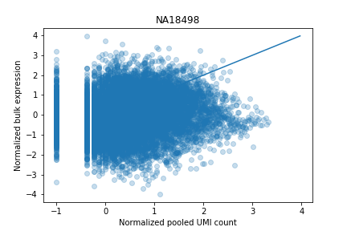
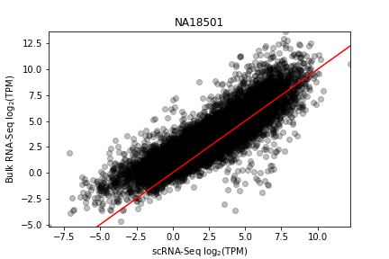
 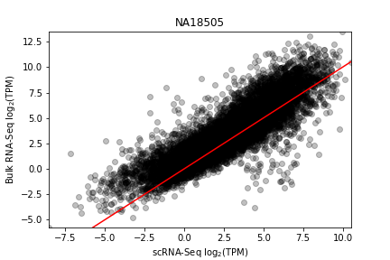
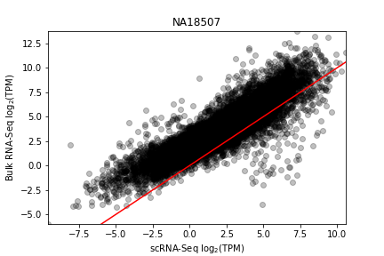
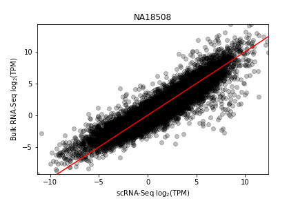
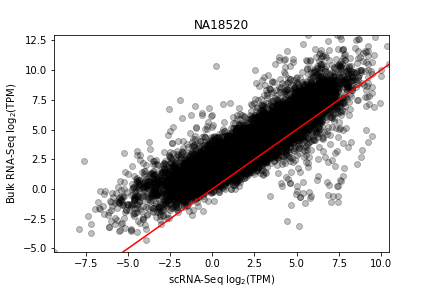
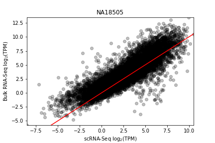
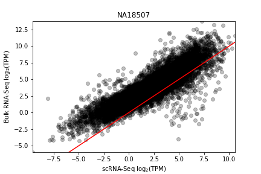
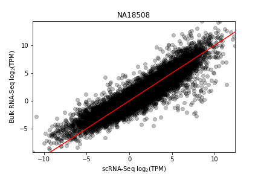
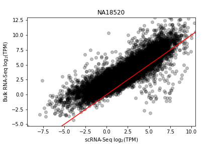
Plot bulk vs. pooled subsets
Plot concordance between bulk vs pools of single cells, focusing on genes which have log-transformed expression at least 1 in both assays.
def plot_concordance_by_num_cells(individual, umi, annotations, bulk_tpm, output_dir): bulk_tpm = bulk_tpm[individual].to_frame() umi = umi.loc[:,(annotations['chip_id'] == individual).values] for num_cells in [1, 10, 50, 100, 200]: pooled_cpm = cpm(umi.sample(n=num_cells, axis=1).sum(axis=1).to_frame(), log2=True) plot_concordance( x=pooled_cpm, y=bulk_tpm, title='{}, {} cell{}'.format(individual, num_cells, 's' if num_cells > 1 else ''), filename='{}/{}-{}.png'.format(output_dir, individual, num_cells), gridsize=20)
plot_concordance_by_num_cells( 'NA18507', umi, annotations, bulk, '/home/aksarkar/projects/singlecell-qtl/analysis/figure/sc-vs-bulk.org/vs-cells/' )
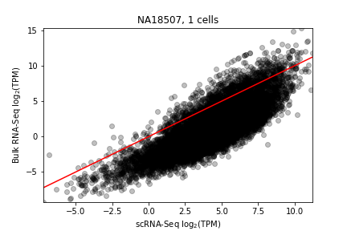 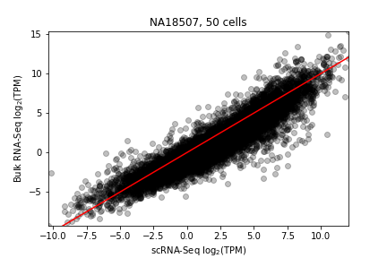 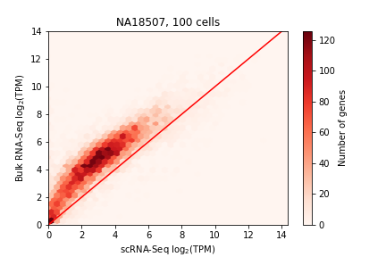 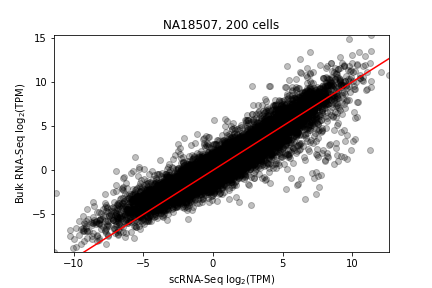
Plot pooled subsets vs. pooled subsets
Ensure that pools don't overlap by randomly sampling double the cells and partitioning into two halves.
def plot_concordance_pooled_subsets(individual, umi, annotations, output_dir): umi = umi.loc[:,(annotations['chip_id'] == individual).values] for num_cells in [1, 10, 50, 100]: sample = umi.sample(n=2 * num_cells, axis=1) pool1 = cpm(sample.iloc[:,:num_cells].sum(axis=1).to_frame(), log2=True) pool2 = cpm(sample.iloc[:,num_cells:].sum(axis=1).to_frame(), log2=True) plot_concordance( x=pool1, y=pool2, title='{}, {} cell{}'.format(individual, num_cells, 's' if num_cells > 1 else ''), filename='{}/{}-{}.png'.format(output_dir, individual, num_cells), ylabel='scRNA-Seq $\log_2(\mathrm{CPM} + 1)$', gridsize=15)
plot_concordance_pooled_subsets( 'NA18507', umi, annotations, '/home/aksarkar/projects/singlecell-qtl/analysis/figure/sc-vs-bulk.org/subsets/' )
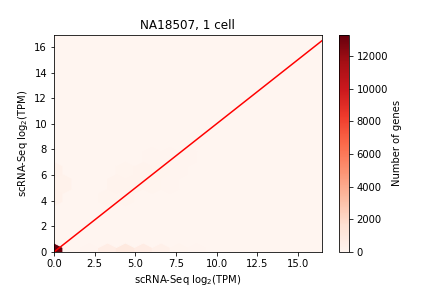 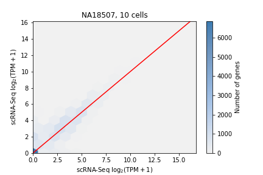 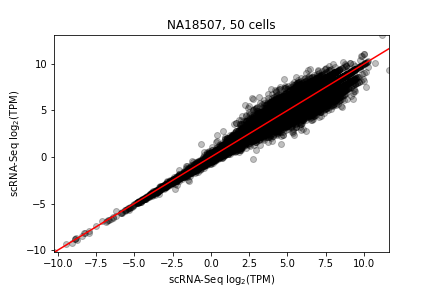 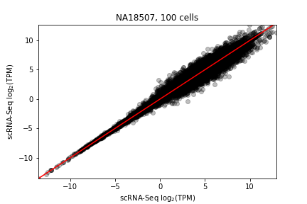